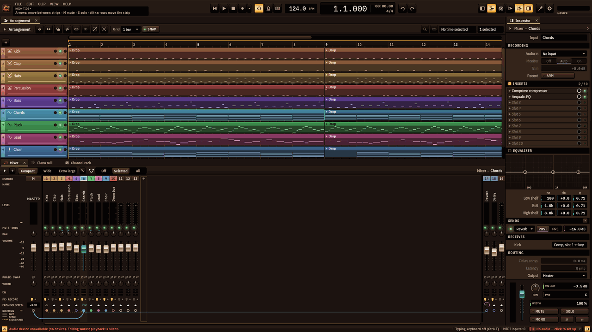
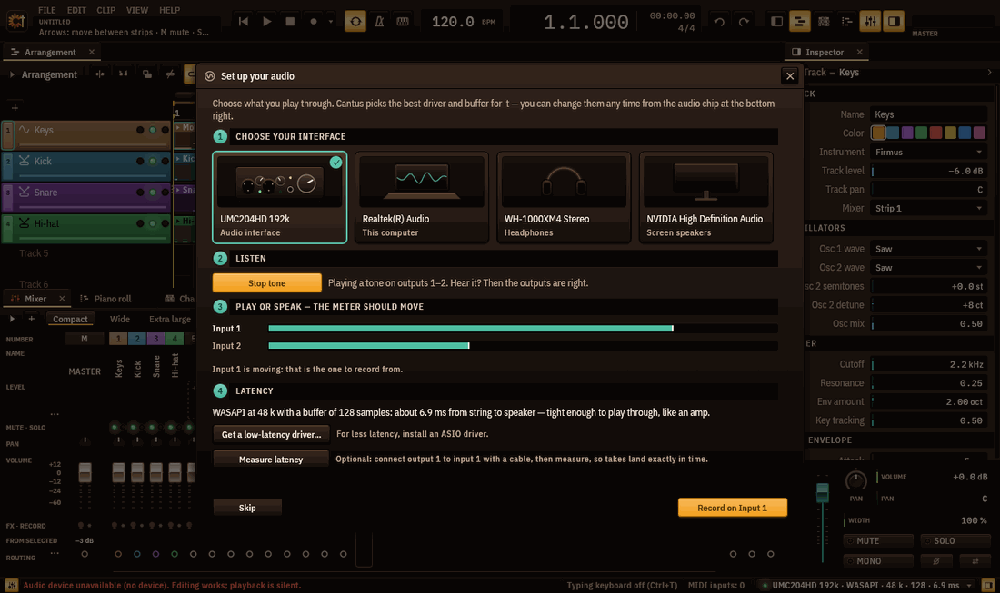
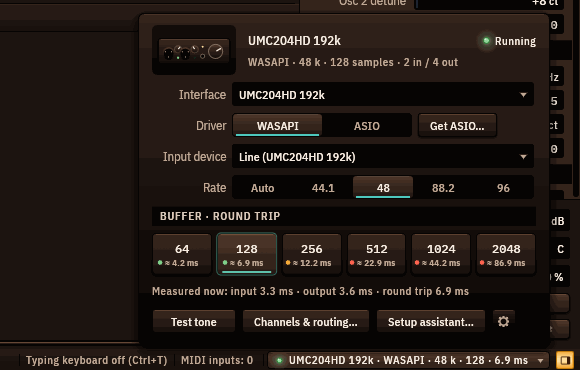
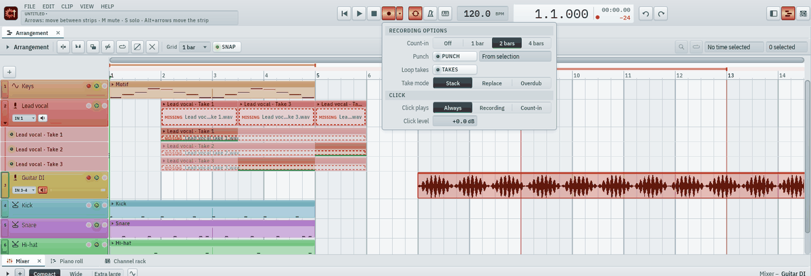
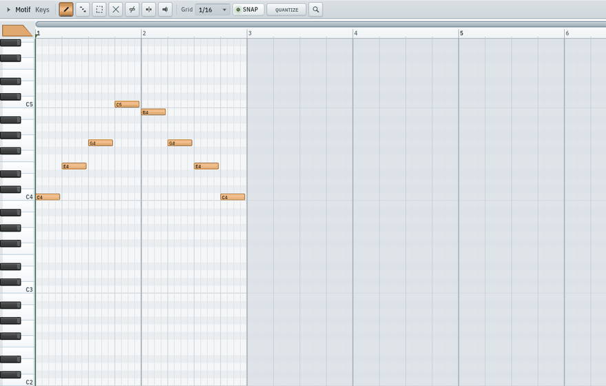
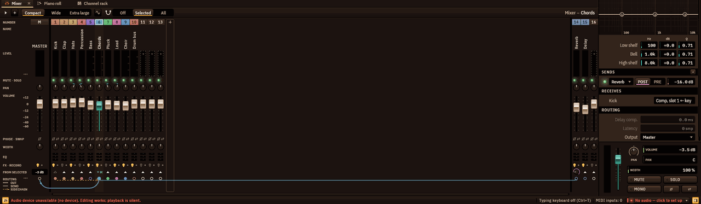
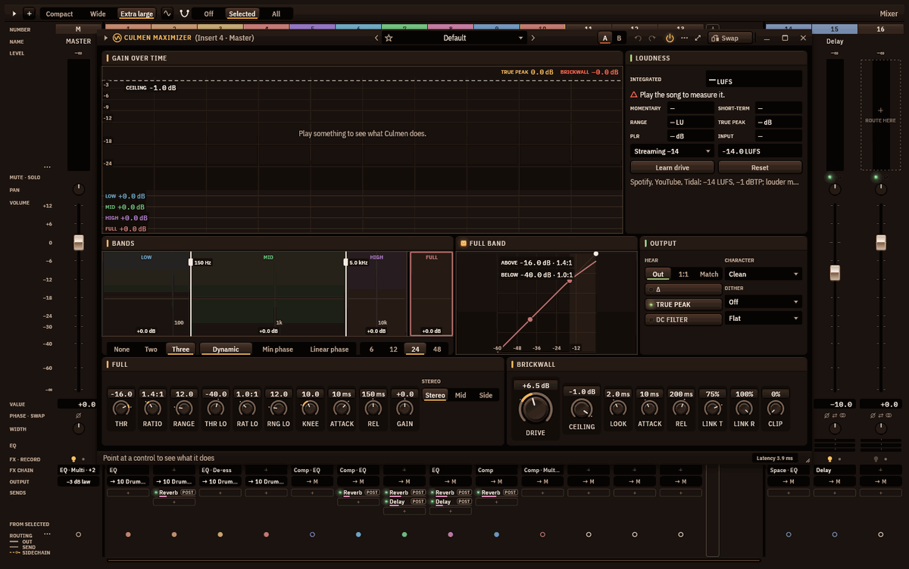
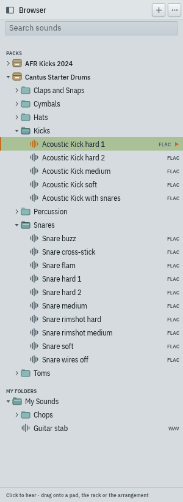
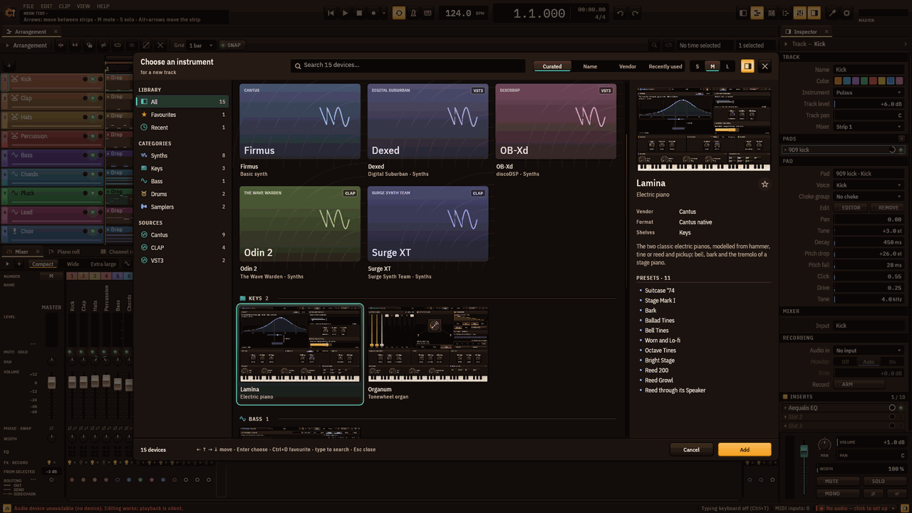

Cantus — manual de inicio rápido
Para Cantus 0.1.0-beta.1 en Windows · Read in English
Cantus es una estación de trabajo de audio digital libre y de código abierto: graba, compón, mezcla y masteriza una canción, de la primera nota al archivo terminado. Este manual te lleva hasta ahí en una tarde. Todo lo que nombra está en el programa tal como es hoy; donde la beta aún tiene huecos, el capítulo 14 lo dice.

Contenido
- Instalación
- Primer inicio: configura tu audio
- El espacio de trabajo
- Grabar audio y MIDI
- Editar: clips, piano roll, automatización
- Mezclar: el mezclador, inserciones y envíos
- Masterizar: la cadena del máster, Fervor, Latitudo, Culmen
- Exportar
- Sonidos: el explorador y los paquetes de sonidos
- Instrumentos y efectos: el selector de dispositivos
- Proyectos, autoguardado y ajustes
- Atajos de teclado
- Privacidad y actualizaciones
- Problemas conocidos y limitaciones
- Reportar un error
1. Instalación
Necesitas Windows 11 de 64 bits (Windows 10 debería funcionar, pero no se ha probado) y unos 200 MB de disco.
- Descarga
Cantus-0.1.0-beta.1-windows-x64-setup.exede la página de versiones. - Ejecútalo. Se instala solo para ti, en
%LOCALAPPDATA%\Programs\Cantus, y no pide permisos de administrador. Esta beta aún no está firmada, así que Windows puede mostrar "Windows protegió tu PC": elige Más información ▸ Ejecutar de todas formas. - Elige los componentes: el programa (obligatorio), Abrir los proyectos .cantus con Cantus (activado), un acceso directo en el escritorio (desactivado), los plug-ins CLAP y VST3 para otros DAW (activados) y Controlador FlexASIO (se descarga ahora) (desactivado — márcalo si tu tarjeta de sonido no tiene controlador ASIO propio; ver el capítulo 2).
Copia portátil. Descomprime Cantus-0.1.0-beta.1-windows-x64-portable.zip donde quieras (una memoria USB sirve). Por el archivo portable.txt junto a cantus.exe, esa copia guarda sus ajustes en la carpeta data de al lado y no escribe nada en tu perfil.
Desinstalar desde Aplicaciones de Windows. Tus ajustes, presets y autoguardados solo se borran si marcas esa casilla; tus proyectos nunca se tocan.
2. Primer inicio: configura tu audio
La primera vez que Cantus arranca, se abre la ventana Configura tu audio sobre la música.

- Elige tu interfaz. Cada dispositivo de audio tiene una tarjeta: Interfaz de audio, Este equipo, Audífonos… Haz clic en la que usas para tocar y escuchar. Cantus le elige controlador y búfer: ASIO a 128 muestras para una interfaz con controlador ASIO propio; si no, WASAPI (el audio de Windows) a 256.
- Escucha. Haz clic en Tono de prueba: deberías oír un tono suave en las salidas 1–2.
- Toca o habla — el medidor debe moverse. Rasguea, canta o habla en lo que tengas conectado; la entrada que se mueve es la que vas a grabar.
- Latencia. Cantus dice cuánto tarda el sonido de la cuerda a la bocina y si es lo bastante justo para tocar a través de él. Para tomas exactas, conecta con un cable la salida 1 a la entrada 1 y haz clic en Medir latencia; Cantus colocará cada toma a la muestra.
Haz clic en Grabar en … y Cantus añade una pista de audio en esa entrada, armada y lista: pulsa R para grabar. Omitir cierra la ventana; no vuelve a abrirse sola (el botón Asistente… del chip de audio la trae de vuelta).
El chip de audio
El chip de abajo a la derecha muestra siempre el dispositivo, el controlador, la frecuencia, el búfer y la latencia — por ejemplo UMC204HD · ASIO · 48 k · 128 · 6.1 ms. Su luz es verde cuando el audio funciona, ámbar tras un corte y roja cuando el dispositivo se perdió o el controlador se detuvo. Haz clic en él para cambiar cualquier cosa; cada cambio se aplica al instante y se recuerda para esa interfaz:

- Interfaz, Controlador (WASAPI o ASIO, con la lista Controlador ASIO), Dispositivo de entrada, Frecuencia;
- Búfer · ida y vuelta: de 64 a 2048 muestras, cada una con su latencia. Más pequeño es más justo para tocar; más grande es más seguro para mezclas grandes. Si la barra de estado cuenta cortes, sube al siguiente tamaño;
- los problemas aparecen arriba con un botón que los arregla (Reiniciar audio, Usar el audio de este equipo, Usar 48 kHz…);
- Tono de prueba, Canales y ruteo… (nombra tus entradas y salidas, elige un par para la mezcla de audífonos), Asistente… y el engrane con todos los ajustes.
¿Qué controlador? Usa el controlador ASIO de tu interfaz si lo tiene (Behringer, Focusrite, PreSonus, Steinberg, MOTU, RME…). Para el sonido integrado de una laptop, usa WASAPI, o instala FlexASIO para menos latencia. Obtener ASIO… en la ventana del chip abre otra con la página de descarga de FlexASIO, la de ASIO4ALL y las de los fabricantes; tras instalar un controlador, haz clic en Volver a buscar. Cantus nunca instala controladores por su cuenta.
Al conectar una interfaz, Cantus ofrece cambiar a ella; al desconectarla, ofrece el audio de tu equipo y vuelve a ella cuando regresa. Si un controlador deja de responder, Cantus reinicia el audio una vez por sí solo. No se puede cambiar el dispositivo mientras grabas.
3. El espacio de trabajo
Cantus abre con una canción — la segunda subida de la demo Neon Tide, en bucle — para que lo primero que oigas sea música. Pulsa Espacio para reproducirla.
- La barra de herramientas (arriba): el logo y los menús (Archivo, Edición, Clip, Ver, Ayuda), el nombre del proyecto (con
•si tiene cambios sin guardar), el transporte (Ir al inicio, Reproducir, Detener, Grabar y sus opciones ▾), Bucle, Metrónomo, Teclas (el teclado del ordenador), el tempo (arrástralo, usa la rueda o doble clic para 120), el reloj, deshacer y rehacer, y seis teclas de ventana: Explorador, Arreglo, Rack de canales, Piano roll, Mezclador, Inspector. - El arreglo (centro): las pistas y sus clips sobre una línea de tiempo.
- La zona inferior: el Mezclador, el Piano roll y el Rack de canales en pestañas.
- El inspector (derecha,
I): todo sobre la pista, el canal o el clip seleccionado. - La barra de estado (abajo): lo que hay bajo el puntero, CPU y cortes, latencia, entradas MIDI, dispositivos minimizados y el chip de audio.
Cada área se muestra u oculta con su tecla de ventana o su tecla de función (F5 arreglo, F6 rack de canales, F7 piano roll, F9 mezclador, Alt+F8 explorador, I inspector). Arrastra los divisores para cambiar tamaños; clic derecho en una pestaña para que flote en su propia ventana; guarda la forma de la ventana en Ver ▸ Disposición ▸ Guardar disposición…. La interfaz se amplía del 75 % al 200 % (Ctrl++, Ctrl+-, Ctrl+0). Colores, temas (claro y oscuro) y el logo están en Ver ▸ Apariencia.
Canciones de demostración. Archivo ▸ Canciones de demostración… (Ctrl+Shift+N) abre seis canciones hechas solo con los instrumentos y efectos de Cantus: Neon Tide (house), Morning Light (balada pop), Sunday Strut (funk y soul), Paper Lanterns (hip-hop lo-fi), Aurora (cinemática) y Midnight Static (trap). Abre una, escúchala, desármala.
4. Grabar audio y MIDI
Una pista de audio
- Añade una pista de audio:
Ctrl+Shift+A, o clic derecho en el + sobre las cabeceras de pista ▸ Añadir pista de audio. (El Grabar en … del primer inicio te crea una.) - Ármala: haz clic en la luz roja redonda de su cabecera (o
Alt+R). Mayús+clic arma solo esa pista. Una pista armada muestra el medidor de su entrada. - Elige su entrada: el chip de entrada de la cabecera (Ent 1, Ent 1-2…; aparece cuando la fila de la pista es lo bastante alta), la sección Grabación del inspector o el menú de la pista.
- Escucha: la tecla del altavoz de la cabecera alterna No, Auto (oyes la entrada mientras la pista está armada — lo predeterminado) y Sí. El inspector tiene además Ajuste (−24 a +24 dB antes de grabar).
- Pulsa
R(o la tecla de grabar). Graban todas las pistas armadas; pulsaRoEspaciopara parar. Toda la pasada es un solo paso de deshacer.
Las tomas se escriben como archivos WAV de 32 bits flotantes: en la carpeta Audio del proyecto una vez guardado; antes, en %LOCALAPPDATA%\Cantus\recordings\; al guardar se mueven al proyecto. Cada toma se adelanta la latencia medida, para que cuadre con lo que oíste.
Opciones de grabación
La ▾ junto a la tecla de grabar (o clic derecho sobre ella) abre las Opciones de grabación:

- Claqueta: no, 1, 2 o 4 compases antes de la toma (
Alt+C). La claqueta suena aunque el Metrónomo (Ctrl+M) esté apagado. - Pinchazo: graba solo dentro de un tramo. Desde la selección toma la selección de tiempo;
Alt+Pusa la selección, si no el bucle, si no dos compases desde el cursor. El tramo aparece como una llave roja bajo la regla: arrastra sus extremos. Todo lo tocado se conserva en el archivo; el pinchazo solo fija la ventana del clip. - Tomas en bucle: con el bucle activado, cada vuelta es una toma.
- Modo de toma: Apilar (los clips anteriores pasan a carriles de tomas — lo predeterminado), Reemplazar (corta lo que cubre la toma) o Sobregrabar (MIDI: añade notas al clip).
- Clic: cuándo suena (Siempre, Al grabar, Claqueta) y su nivel.
Tomas y comping
Cada toma se guarda en un carril de tomas bajo la pista: ábrelos con el pequeño desplegable al pie de la celda de color de la pista, Alt+T o Mostrar tomas del menú de la pista. Arrastra sobre una toma para pasar ese tramo a la pista; haz clic en una toma para usarla entera. Clic derecho en un carril: Usar esta toma, Borrar tomas sin usar (que también quita las grabaciones que ya nada reproduce), Separar tomas en pistas nuevas y Ocultar tomas.
MIDI
Arma una pista de instrumento (una sin entrada de audio) y pulsa R: se graban en un clip las notas de todos los teclados MIDI que Cantus encontró (la barra de estado dice Entradas MIDI: n). Sin nada armado, R graba en la pista seleccionada. ¿Sin teclado? Ctrl+T activa el teclado del ordenador: A–L tocan notas, Z/X cambian de octava. Mientras está activo, los atajos de letra (incluida la R) se apagan — usa Espacio o la tecla de grabar.
5. Editar: clips, piano roll, automatización
Los clips en el arreglo
- Crear: doble clic en un lugar vacío de una pista (un clip de 4 compases), o graba.
- Seleccionar: clic;
Ctrl+clicañade; arrastra sobre el vacío para un recuadro;Esclimpia. - Mover: arrastra (también a otra pista).
Alt+arrastrarcopia;Ctrlal arrastrar ignora la rejilla.Izquierda/Derechadesplazan según la rejilla, conShiftun compás. - Recortar: arrastra el borde de un clip — su contenido se queda donde está. Desplazar el contenido:
Shift+arrastrarlo mueve dentro del clip. - Cortar en el cursor:
Ctrl+E. Unir:Ctrl+J. Duplicar:Ctrl+D(púlsalo de nuevo para seguir en fila). Silenciar:0. Renombrar:F2. Color:Ctrl+Shift+C. - Selección de tiempo: arrastra en el carril inferior de la regla; la franja de arriba es el bucle.
Shift+Lpone el bucle en la selección,Zla amplía. - Los clips de audio tienen tiradores de fundido de entrada, de salida y de ganancia (doble clic en uno lo restablece; clic derecho en un fundido para su curva) y un menú con Normalizar, Invertir, Restablecer ganancia y Quitar fundidos.
- Importar audio: arrastra archivos WAV, AIFF, FLAC u Ogg al arreglo (caen donde sueltas), o Archivo ▸ Importar audio…. Un archivo MIDI añade sus pistas.
La rejilla (barra del arreglo) empieza en un compás; elige valores más finos para el detalle. Desplázate con la rueda, Shift+rueda en el tiempo, Ctrl+rueda para el zoom.
El piano roll
Selecciona un clip MIDI y muestra el piano roll (F7, o su pestaña bajo el arreglo): edita las notas de ese clip.

| Herramienta | Tecla | Qué hace |
|---|---|---|
| Dibujar | P o 1 | Clic añade una nota, arrastrar mueve, arrastrar el borde derecho cambia la duración, clic derecho borra |
| Pintar | B o 2 | Arrastra sobre la rejilla para pintar notas |
| Seleccionar | E o 3 | Arrastra para seleccionar; arrastra notas para moverlas |
| Borrar | D o 4 | Clic o arrastre sobre notas para borrarlas |
| Silenciar | T o 5 | Clic en una nota para silenciarla (se queda, sin sonar) |
| Cortar | C o 6 | Arrastra una línea para dividir notas |
| Escuchar | Y o 7 | Clic en notas o filas para oírlas |
Arriba/Abajo transportan la selección (Shift: una octava), Izquierda/Derecha la desplazan, Q cuantiza, Ctrl+C/Ctrl+V copian y pegan. Las velocidades son tallos en el carril bajo la rejilla: arrástralos, o Alt+rueda sobre una nota. Una batería muestra una fila con nombre por pad.
El rack de canales (F6) muestra cada pista como una fila de pasos sobre los compases del clip seleccionado: clic enciende un paso, clic derecho lo apaga, arrastrar pinta. Un paso es una nota normal.
Automatización
Clic derecho en cualquier perilla, fader o control de un efecto ▸ Crear clip de automatización, o mueve un control y pulsa Alt+A (automatiza lo último que tocaste). El clip cubre la selección de tiempo (si no, el bucle; si no, cuatro compases) en un carril bajo su pista. En el carril: arrastra los puntos, arrastra el anillo entre dos puntos para curvar, clic en la línea añade un punto, doble clic en un punto lo borra, clic derecho para su forma (curva simple o doble, mantener, escalera, pulso, onda). Doble clic en el clip abre el editor grande, con herramienta de dibujo y articuladores (invertir, suavizar, azar, escala, LFO). Un control automatizado muestra un punto.
6. Mezclar: el mezclador, inserciones y envíos

Cada pista alimenta un canal del mezclador (F9); los canales van al máster, a la izquierda, o a otro canal (un bus). Un canal tiene su medidor, silencio y solo, paneo, fader, fase e intercambio, anchura, EQ de tres bandas, sus inserciones y sus envíos. Clic selecciona, Ctrl+clic añade, Shift+clic toma un tramo; mover un fader de una selección mueve todos. Con el foco en el mezclador, M silencia, S pone solo, Alt+Izquierda/Alt+Derecha mueven el canal. Ctrl+rueda cambia el ancho de los canales; en Extra grande las ranuras de inserción se ven dentro de cada canal.
- Inserciones (hasta diez por canal): clic en una ranura vacía para elegir un efecto en el selector, o clic derecho para la lista rápida. En una ranura ocupada, clic en la luz la puentea y en el nombre abre su ventana; clic derecho para cambiarla, moverla o quitarla. En el inspector, cada inserción tiene un anillo de Mezcla (seco/procesado).
- Envíos: selecciona un canal y mira la fila Envíos de los demás — haz clic en el ▲ del canal al que quieres enviar (un retorno de reverb, un compresor en paralelo); una perilla fija entonces el nivel del envío. Los envíos son post-fader.
- Ruteo: clic derecho en un canal ▸ Enrutado ▸ Salida o Enviar a, o selecciona varios canales y Crear submezcla con los seleccionados.
- Las ventanas de los dispositivos tienen Cambiar, minimizar (a la bandeja de la barra de estado), maximizar y cerrar.
F8abre el instrumento de la pista seleccionada,Esccierra el último dispositivo que usaste yF12cierra todos los flotantes.
El solo sigue el ruteo: un canal en solo se oye con lo que lo alimenta y aquello a lo que alimenta.
7. Masterizar: la cadena del máster, Fervor, Latitudo, Culmen
El máster tiene su propia cadena de hasta diez inserciones, aplicada a toda la mezcla antes del fader del máster. Haz clic en la cabecera del máster para ver su cadena en el inspector (La mezcla completa → las inserciones → Salida de audio), o clic derecho en su nombre ▸ Efectos ▸ + Añadir efecto.

Las demos masterizan en este orden, y es un buen comienzo:
- Aequalis (EQ): un pasa-altos bajo el sub, un poco de aire.
- Multiplex o Comprimo: un pegamento suave.
- Latitudo (estéreo): el preset Máster: graves más firmes o Máster: agudos más anchos, graves en mono deja los graves en mono y los agudos anchos. Vigila su medidor de correlación: debe quedar por encima de cero.
- Culmen (maximizador): elige un objetivo — Streaming −14 (−14 LUFS, −1 dBTP), Apple −16, CD −9, Club −7, Emisión −23 — reproduce la parte más fuerte de la canción y haz clic en Aprender empuje: Culmen escucha, ajusta el empuje, vuelve a escuchar y se detiene en el objetivo, en un solo paso de deshacer. La tarjeta Sonoridad muestra la sonoridad momentánea, de corto plazo e integrada y el pico real; el veredicto dice En el objetivo o cuántos LU sobran o faltan. Culmen trabaja en tres bandas más la banda completa, hacia un muro de pico real en el techo; su Carácter (Limpio, Pegada, Fuerte, Bus, Seguro) y sus diez presets cubren casi cualquier máster.
Fervor (saturación) añade color: Cinta, Válvula, Overdrive, Fuzz, Recorte, Pliegue o una Curva dibujada, con sobremuestreo, tono, mezcla e Igualar nivel, para que lo más fuerte nunca te engañe. En el máster, los presets Recorte de máster y Válvula en el medio son los suaves.
8. Exportar
Archivo ▸ Exportar audio… (Ctrl+Shift+E con las teclas por defecto) abre la ventana de exportación: los presets a la izquierda, las opciones a la derecha y una línea que dice exactamente qué se va a escribir.
- Presets: Streaming (MP3 320 kbps, 44.1 kHz, −14 LUFS, −1 dBTP), CD (WAV 16 bits, 44.1 kHz, dither con modelado), Stems para masterizar (cada canal, WAV 24 bits a la frecuencia de la sesión, sin normalizar) y Podcast (MP3 mono 128 kbps, −16 LUFS, −1 dBTP). Si cambias cualquier opción se ilumina la tarjeta Personalizado.
- Qué: la canción (del inicio al final del último clip, más la cola que elijas), la selección de tiempo, o stems — un archivo por canal del mezclador (después de su fader) o por pista (antes de su canal), todos desde el primer tiempo de la canción con la compensación de latencia incluida, y opcionalmente a través de la cadena del máster.
- Formatos: WAV de 16, 24 bits o 32 bits flotantes; FLAC de 16 o 24 bits; MP3 CBR de 128 a 320 kbps o VBR V0/V2/V4/V6 (LAME), sin huecos; Ogg Vorbis calidad 3–10. Frecuencia: la de la sesión o 44.1, 48, 88.2, 96, 192 kHz (MP3 usa 44.1 o 48). Mono o estéreo.
- Dither (apagado, TPDF, con modelado) al escribir 16 o 24 bits.
- Loudness: apagado, o un objetivo (−9, −11, −14, −16, −19, −23 LUFS) con un techo de pico real (−0.1, −0.3, −1, −2 dBTP); el limitador de Culmen sostiene el techo cuando la ganancia lo necesita. Los stems nunca se normalizan.
- Etiquetas: título, artista, álbum, año, comentario y el crédito de codificador Cantus.
La exportación corre en segundo plano con una barra de progreso; Detener no deja archivos a medias. Se recuerdan tus últimas opciones.
- MIDI: Archivo ▸ Exportar MIDI… — la canción entera, la pista seleccionada o el clip seleccionado, como archivo de tipo 1 con el tempo, el compás y los nombres de pista.
- DAWproject: Archivo ▸ Exportar DAWproject… para llevar un proyecto a Bitwig, Studio One y otros DAW que lo leen (un informe dice lo que no pudo viajar).
9. Sonidos: el explorador y los paquetes de sonidos
El explorador (Alt+F8, la primera tecla de ventana) se acopla a la izquierda. Lista los paquetes de sonidos que instalaste y Mis carpetas (haz clic en + para añadir cualquier carpeta de muestras).

- Clic en un sonido para oírlo; otro clic lo detiene. Escribe en el campo de búsqueda para encontrar sonidos en todos los paquetes y carpetas.
- Arrastra un sonido a un pad de Pulsus (el pad lo toca), al mapa de teclas de Exemplar (una zona en esa tecla), al rack de canales (un canal de muestra nuevo con su propio canal del mezclador) o al arreglo (un clip de audio donde lo sueltas). Cada arrastre es un solo paso de deshacer.
- Sin nada instalado, el explorador ofrece Empieza con una batería: Descargar trae la Batería inicial de Cantus (81 golpes, 33 MB). Paquetes de sonidos… (o Más paquetes…) lista los demás — las baterías de Karoryfer, la percusión de VCSL y VSCO 2, un TX81Z para Exemplar — con su tamaño, licencia y créditos; Instalar, Actualizar, Quitar, mostrar la carpeta e Instalar desde un archivo… para equipos sin internet.
Todos los paquetes son CC0: tuyos para cualquier canción, gratis y sin tener que citar. Se guardan en %LOCALAPPDATA%\Cantus\Content\; cada archivo se verifica con su SHA-256.
10. Instrumentos y efectos: el selector de dispositivos
El selector de dispositivos muestra todos los instrumentos y efectos — los de Cantus y los plug-ins CLAP y VST3 instalados en tu equipo — como mosaicos.

Ábrelo con el + sobre las cabeceras de pista (una pista de instrumento nueva), con un clic en el chip de instrumento de una pista (cambiar el instrumento), con Cambiar en cualquier ventana de dispositivo, con una ranura de inserción vacía o con Ver ▸ Selector de dispositivos…. Busca por nombre, fabricante o tipo; filtra por estante (Favoritos, Recientes, una categoría, o Cantus / CLAP / VST3); las flechas se mueven, Enter elige, Ctrl+D marca un favorito, Esc cierra. Cambiar un instrumento conserva sus notas, clips, canal del mezclador y efectos; cambiar un efecto conserva su ranura, su mezcla y su puenteo.
| Instrumento | Qué es |
|---|---|
| Firmus | El sintetizador sencillo con el que empieza cada pista nueva |
| Pulsus II | Caja de ritmos: tambores sintetizados y pads de muestras, grupos de corte |
| Unda | Sintetizador wavetable: tres osciladores, unísono, dos filtros, LFO dibujados |
| Calor | Polisintetizador analógico |
| Modulus | Sintetizador FM de ocho operadores; lee bancos DX7 |
| Exemplar | Sampler: SFZ, Decent Sampler y SoundFont |
| Gravis | Bajo: 808, sintetizado y eléctrico modelado |
| Lamina | Piano eléctrico |
| Organum | Órgano de ruedas fónicas con barras y altavoz rotatorio |
Los efectos son Aequalis (EQ), Comprimo (compresor), Porta (puerta y expansor), Sibilus (de-esser), Multiplex (dinámica multibanda), Terminus (limitador), Culmen (maximizador), Spatium (reverb), Fervor (saturación), Latitudo (estéreo), Delay y Reverb.
Tus plug-ins. Cantus revisa las carpetas estándar — %LOCALAPPDATA%\Programs\Common\CLAP y …\VST3, C:\Program Files\Common Files\CLAP y …\VST3 — y las que añadas en Ajustes ▸ Plug-ins (Buscar plug-ins, Volver a leer todo). Cada archivo se revisa en un proceso aparte, así que un plug-in que falla al revisarse queda bloqueado, sin tumbar Cantus. Los efectos de Cantus se instalan también en tus carpetas CLAP y VST3, para otros DAW.
11. Proyectos, autoguardado y ajustes
- Archivo ▸ Nuevo proyecto (
Ctrl+N), Abrir… (Ctrl+O), Guardar (Ctrl+S), Guardar como… (Ctrl+Shift+S). Un proyecto es un archivo.cantus; al guardar, el anterior queda como.cantus.bak. - Los archivos de audio se reúnen al guardar: las grabaciones pasan a la carpeta
Audiodel proyecto y los archivos importados se copian ahí, así que la carpeta viaja completa. Reunir audio y guardar lo hace cuando quieras. Un archivo que falta muestra FALTA en su clip; clic derecho ▸ Buscar archivo…. - El autoguardado escribe una copia de recuperación cada minuto si algo cambió (Ajustes ▸ Guardado, de 10 s a 10 min):
<proyecto>.cantus.autosavejunto a un proyecto guardado, o en%LOCALAPPDATA%\Cantus\autosave\para uno sin guardar. Nunca sobrescribe tu archivo, y escribirla nunca congela la ventana (se hace en segundo plano). - Recupera tu trabajo: si Cantus se cierra de forma inesperada —o lo cierras sin guardar—, el siguiente inicio te ofrece lo que quedó: los cambios autoguardados y las tomas grabadas que no están en ningún archivo guardado. Restaurar los devuelve como un solo paso de deshacer (
Ctrl+Zmuestra el último guardado); Descartar no borra nada. Nuevo y Abrir preguntan antes de reemplazar trabajo sin guardar.
Ajustes (Ver ▸ Ajustes…): General (el versículo al iniciar, sí o no, y la Biblia en español), Audio (controlador, dispositivos, frecuencia, búfer, latencia y la corrección de grabación), MIDI, Apariencia (idioma — English o Español —, tamaño de la interfaz, colores, atajos de teclado), Guardado, Actualizaciones y Plug-ins.
12. Atajos de teclado
Ayuda ▸ Atajos de teclado lista todos los atajos y permite cambiarlos, o cargar los presets de FL Studio, Ableton Live o Bitwig Studio. Los predeterminados:
| Teclas | Acción |
|---|---|
Espacio | Reproducir / pausar (también detiene una grabación) |
R | Grabar |
Inicio | Ir al principio |
Ctrl+L · Ctrl+M | Bucle sí/no · metrónomo sí/no |
Alt+R · Alt+C · Alt+P · Alt+T | Armar la pista seleccionada · claqueta · pinchazo · mostrar tomas |
Ctrl+Shift+A | Añadir una pista de audio |
Ctrl+N · Ctrl+O · Ctrl+S · Ctrl+Shift+S | Nuevo · abrir · guardar · guardar como |
Ctrl+Shift+N | Canciones de demostración |
Ctrl+Shift+E | Exportar audio |
Ctrl+Z · Ctrl+Y | Deshacer · rehacer |
Ctrl+X · Ctrl+C · Ctrl+V · Ctrl+D | Cortar · copiar · pegar · duplicar |
Ctrl+A · Supr · Esc | Seleccionar todo · eliminar · vaciar la selección |
Ctrl+E · Ctrl+J · 0 · F2 | Cortar el clip · unir · silenciar el clip · renombrar |
Izquierda Derecha (Shift: un compás) | Desplazar |
Arriba Abajo (Shift: una octava) | Transportar notas |
Q | Cuantizar |
P B E D T C Y o 1–7 | Herramientas del piano roll |
Shift+L · Z | Bucle en la selección de tiempo · ampliarla |
Alt+A | Automatizar el último parámetro que moviste |
F5 F6 F7 F9 · Alt+F8 · I | Arreglo, rack de canales, piano roll, mezclador · explorador · inspector |
F8 · F12 | El instrumento de la pista seleccionada · cerrar los dispositivos flotantes |
M · S · Alt+Izquierda/Alt+Derecha | Mezclador: silenciar · solo · mover el canal |
Ctrl+T | El teclado del ordenador toca notas |
Ctrl++ · Ctrl+- · Ctrl+0 | Zoom de la interfaz |
13. Privacidad y actualizaciones
Cantus no tiene telemetría. Una copia instalada o portátil pregunta a GitHub una vez al día si hay una versión nueva — una petición anónima, sin versión, equipo ni datos tuyos — y te pregunta antes de descargar nada; Ajustes ▸ Actualizaciones ▸ Buscar a diario la apaga. Los paquetes de sonidos se descargan solo cuando haces clic en Instalar. Todo lo demás se queda en tu equipo. Los detalles están en PRIVACY.md; las licencias de todo aquello con lo que está hecho Cantus, en THIRD-PARTY-NOTICES.md (también en Ayuda ▸ Acerca de Cantus).
14. Problemas conocidos y limitaciones
Esto es una beta. Lo que ya sabemos:
- Un plug-in de terceros que falla cierra Cantus (los plug-ins se ejecutan dentro del programa; aislarlos viene después). Guarda seguido.
- No se pueden importar MP3 (sí WAV, AIFF, FLAC y Ogg).
- Sin estiramiento de tiempo: los clips de audio no siguen los cambios de tempo; un tempo y un compás por proyecto. Sin fundidos cruzados ni envolventes de ganancia por clip.
- Los plug-ins de terceros no se renderizan en los stems y sus parámetros aún no se pueden automatizar; la automatización se dibuja, no se graba (sin latch ni touch).
- Lamina y Exemplar suenan 6–8 dB más bajo que los demás instrumentos con el mismo fader.
- Audio: el controlador ASIO integrado de Realtek no da sonido en algunas laptops (usa WASAPI o FlexASIO); ASIO4ALL puede tardar varios segundos en arrancar; muchos controladores ASIO fijan el búfer en su propio panel. No se ofrece WASAPI exclusivo.
- Rendimiento: en equipos modestos, un proyecto denso con búfer pequeño puede cortarse; sube el búfer si la barra de estado cuenta cortes.
- La claqueta no suena si el metrónomo está apagado; no se puede cambiar el dispositivo de audio mientras grabas; el explorador aún no se navega con el teclado; los proyectos guardan las muestras de los paquetes con su ruta completa.
- Fuera de esta beta: macOS y Linux, warping, MIDI learn y superficies de control, funciones de IA, varios arreglos por proyecto.
15. Reportar un error
Ayuda ▸ Reportar un error… abre el formulario de errores en GitHub (necesitas una cuenta gratuita de GitHub). Di qué hiciste, qué esperabas y qué pasó; incluye tu versión de Cantus (Ayuda ▸ Acerca de Cantus), tu versión de Windows, tu interfaz de audio, el controlador, la frecuencia y el búfer (todo está en el chip de audio); adjunta un proyecto pequeño que muestre el problema si puedes. Cuéntanos de tu interfaz de audio aunque funcione, con el reporte de hardware, y manda ideas con Ayuda ▸ Sugerir una función…. En español o en inglés, como prefieras.
Cantus lo hace Luis Ángel Almazán — lalmazan.com — y es software libre bajo la GPL de GNU, versión 3 o posterior.